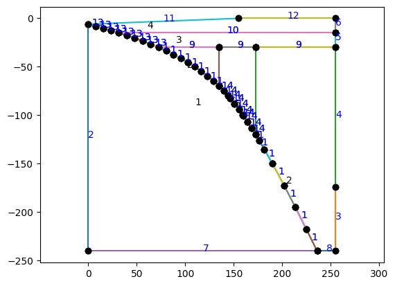
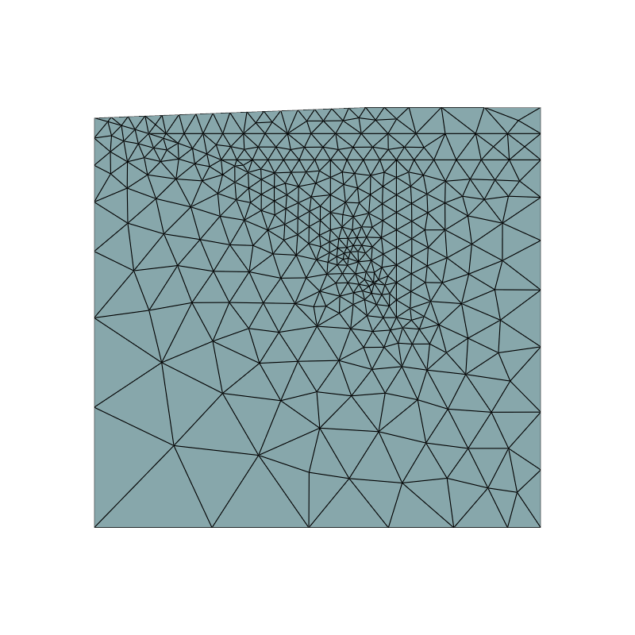

Data Example Geometry#
Define some filenames
import os
data_filename = os.path.join(os.pardir, "data", "all_sz.json")
params_filename = os.path.join(os.pardir, "data", "default_params.json")
Load the subduction zone parameters
import json
with open(data_filename, "r") as fp:
szparams = json.load(fp)
The “minimum” resolution, used to scale resolutions throughout the mesh. The current default of 10.0km is way too high for a real subduction zone model but helps to keep this test notebook fast and readable.
minres = 10.0 # km
import numpy as np
Load the default parameters
with open(params_filename, "r") as fp:
default_params = json.load(fp)
List the available subduction zones that we’ve just loaded from the json file
print("Available subduction zones:")
for k in szparams.keys(): print(k)
Available subduction zones:
01_Alaska_Peninsula
02_Alaska
03_British_Columbia
04_Cascadia
05_Mexico
06_GuatElSal
07_Nicaragua
08_Costa_Rica
09_Colombia_Ecuador
10_N_Peru_Gap
11_C_Peru_Gap
12_Peru
13_N_Chile
14_NC_Chile
15_C_Chile_Gap
16_C_Chile
17_SC_Chile
18_S_Chile
19_N_Antilles
20_S_Antilles
21_Scotia
22_Aegean
23_N_Sumatra
24_C_Sumatra
25_S_Sumatra
26_Sunda_Strait
27_Java
28_Bali_Lombok
29_W_Banda_Sea
30_E_Banda_Sea
31_New_Britain
32_Solomon
33_N_Vanuatu
34_S_Vanuatu
35_Tonga
36_Kermadec
37_New_Zealand
38_S_Philippines
39_N_Philippines
40_S_Marianas
41_N_Marianas
42_Bonin
43_Izu
44_Kyushu
45_Ryukyu
46_Nankai
47_C_Honshu
48_N_Honshu
49_Hokkaido
50_S_Kurile
51_N_Kurile
52_Kamchatka
53_W_Aleutians
54_C_Aleutians
55_E_Aleutians
56_Calabria
This is where you can switch between subduction zones!!#
Choose a subduction zone from the list on the first line of the following cell to load the geometrical parameters from the dictionary
szname = "07_Nicaragua" # change this to switch subduction zones
szdata = szparams[szname]
coast_distance = szdata['coast_distance']
extra_width = szdata['extra_width']
lc_depth = szdata['lc_depth']
uc_depth = szdata['uc_depth']
io_depth = szdata['io_depth']
xs = szdata['xs']
ys = szdata['ys']
res = [1*minres if y >= -default_params["slab_diag2_depth"] else 3*minres for y in ys]
Load the geometry module so we can build a mesh based on the above parameters
import sys, os
sys.path.append(os.path.join(os.path.pardir, 'python'))
import geometry as geo
Define the slab spline
# set up the surface ids for the slab depending on depth
sids = []
for y in ys[1:]:
if y >= -lc_depth:
sid = default_params['fault_sid']
elif y >= -default_params['slab_diag1_depth']:
sid = default_params['slab_sid']
elif y >= -default_params['slab_diag2_depth']:
sid = default_params['slab_diag_sid']
else:
sid = default_params['slab_sid']
sids.append(sid)
sids
[13, 13, 1, 14, 14, 14, 1, 1]
# set up the slab spline
slab = geo.SlabSpline(xs, ys, res=res, sid=sids, name="Slab")
# adding the coupling depths may or may not be necessary
# depending on if they were included in the slab spline data already or not
# the slab class should ignore them if they aren't necessary
slab.addpoint(default_params['partial_coupling_depth'], "Slab::PartialCouplingDepth",
res=default_params['partial_coupling_depth_res_fact']*minres,
sid=default_params['slab_diag_sid'])
slab.addpoint(default_params['full_coupling_depth'], "Slab::FullCouplingDepth",
res=default_params['full_coupling_depth_res_fact']*minres,
sid=default_params['slab_diag_sid'])
# add the slab detector point
slab.addpoint(default_params["slab_det_depth"], "Slab::DetectorPoint",
res=default_params["full_coupling_depth_res_fact"]*minres,
sid=default_params['slab_diag_sid'])
<geometry.Point at 0x7f6679ec3190>
Define the subduction geometry, including crustal layers and plot
geom = geo.SubductionGeometry(slab, **default_params,
wedge_side_top_res=default_params["wedge_side_top_res_fact"]*minres,
wedge_side_base_res=default_params["wedge_side_base_res_fact"]*minres,
slab_side_base_res=default_params["slab_side_base_res_fact"]*minres,
coast_res=default_params["coast_res_fact"]*minres,
coast_distance=coast_distance, extra_width=extra_width)
# add a lower crust
geom.addcrustlayer(lc_depth, "LowerCrust",
sid=default_params["lc_base_sid"], rid=default_params["lc_rid"],
slab_res=default_params["lc_slab_res_fact"]*minres,
side_res=default_params["lc_side_res_fact"]*minres,
slab_sid=default_params["fault_sid"],
side_sid=default_params["lc_side_sid"])
# oceanic subduction zones don't define an upper crust
if uc_depth is not None:
geom.addcrustlayer(uc_depth, "UpperCrust",
sid=default_params["uc_base_sid"], rid=default_params["uc_rid"],
slab_res=default_params["uc_slab_res_fact"]*minres,
side_res=default_params["uc_side_res_fact"]*minres,
slab_sid=default_params["fault_sid"],
side_sid=default_params["uc_side_sid"])
# add the pre-defined in-out point
geom.addwedgesidepoint(io_depth, "WedgeSide::InOut", line_name="UpperWedgeSide",
res=default_params["io_depth_res_fact"]*minres,
sid=default_params["upper_wedge_side_sid"])
# add wedge dividers for the diagnostics
geom.addwedgedivider(default_params["slab_diag1_depth"], "ColdCorner",
slab_res=default_params["slab_diag2_res_fact"]*minres,
top_res=default_params["slab_diag2_res_fact"]*minres,
rid=default_params["wedge_rid"],
slab_sid=default_params["slab_sid"])
# add wedge dividers for the diagnostics
geom.addwedgedivider(default_params["slab_diag2_depth"], "WedgeFocused",
slab_res=default_params["slab_diag1_res_fact"]*minres,
top_res=default_params["slab_diag1_res_fact"]*minres,
rid=default_params["wedge_diag_rid"],
slab_sid=default_params["slab_diag_sid"])
geom.plot(label_sids=True, label_rids=True)
#geom.writegeofile(szname+".geo_unrolled")

mesh, ct, ft = geom.generatemesh()
Info : Meshing 1D...
Info : [ 0%] Meshing curve 1 (Line)
Info : [ 10%] Meshing curve 2 (Line)
Info : [ 10%] Meshing curve 3 (Line)
Info : [ 10%] Meshing curve 4 (Line)
Info : [ 10%] Meshing curve 5 (Line)
Info : [ 10%] Meshing curve 6 (Line)
Info : [ 20%] Meshing curve 7 (Line)
Info : [ 20%] Meshing curve 8 (Line)
Info : [ 20%] Meshing curve 9 (Line)
Info : [ 20%] Meshing curve 10 (Line)
Info : [ 20%] Meshing curve 11 (Line)
Info : [ 30%] Meshing curve 12 (Line)
Info : [ 30%] Meshing curve 14 (Line)
Info : [ 30%] Meshing curve 15 (Line)
Info : [ 30%] Meshing curve 16 (Line)
Info : [ 30%] Meshing curve 17 (Line)
Info : [ 40%] Meshing curve 18 (Line)
Info : [ 40%] Meshing curve 19 (Line)
Info : [ 40%] Meshing curve 20 (Line)
Info : [ 40%] Meshing curve 21 (Line)
Info : [ 40%] Meshing curve 22 (Line)
Info : [ 50%] Meshing curve 23 (Line)
Info : [ 50%] Meshing curve 24 (Line)
Info : [ 50%] Meshing curve 25 (Line)
Info : [ 50%] Meshing curve 27 (Line)
Info : [ 50%] Meshing curve 28 (Line)
Info : [ 60%] Meshing curve 29 (Line)
Info : [ 60%] Meshing curve 30 (Line)
Info : [ 60%] Meshing curve 31 (Line)
Info : [ 60%] Meshing curve 32 (Line)
Info : [ 60%] Meshing curve 33 (Line)
Info : [ 70%] Meshing curve 34 (Line)
Info : [ 70%] Meshing curve 35 (Line)
Info : [ 70%] Meshing curve 36 (Line)
Info : [ 70%] Meshing curve 38 (Line)
Info : [ 70%] Meshing curve 39 (Line)
Info : [ 80%] Meshing curve 40 (Line)
Info : [ 80%] Meshing curve 41 (Line)
Info : [ 80%] Meshing curve 42 (Line)
Info : [ 80%] Meshing curve 43 (Line)
Info : [ 80%] Meshing curve 44 (Line)
Info : [ 90%] Meshing curve 46 (Line)
Info : [ 90%] Meshing curve 47 (Line)
Info : [ 90%] Meshing curve 48 (Line)
Info : [ 90%] Meshing curve 49 (Line)
Info : [ 90%] Meshing curve 50 (Line)
Info : [100%] Meshing curve 51 (Line)
Info : [100%] Meshing curve 52 (Line)
Info : [100%] Meshing curve 54 (Line)
Info : [100%] Meshing curve 55 (Line)
Info : Done meshing 1D (Wall 0.00945167s, CPU 0.009788s)
Info : Meshing 2D...
Info : [ 0%] Meshing surface 1 (Plane, Frontal-Delaunay)
Info : [ 20%] Meshing surface 2 (Plane, Frontal-Delaunay)
Info : [ 40%] Meshing surface 3 (Plane, Frontal-Delaunay)
Info : [ 50%] Meshing surface 4 (Plane, Frontal-Delaunay)
Info : [ 70%] Meshing surface 5 (Plane, Frontal-Delaunay)
Info : [ 90%] Meshing surface 6 (Plane, Frontal-Delaunay)
Info : Done meshing 2D (Wall 0.00983298s, CPU 0.009316s)
Info : 363 nodes 850 elements
import pyvista
pyvista.start_xvfb()
from dolfinx.plot import vtk_mesh
topology, cell_types, x = vtk_mesh(mesh)
grid = pyvista.UnstructuredGrid(topology, cell_types, x)
num_local_cells = mesh.topology.index_map(mesh.topology.dim).size_local
# grid.cell_data["Marker"] = ct.values[ct.indices<num_local_cells]
# grid.set_active_scalars("Marker")
p = pyvista.Plotter(window_size=[800, 800])
p.add_mesh(grid, show_edges=True)
p.view_xy()
p.show()
